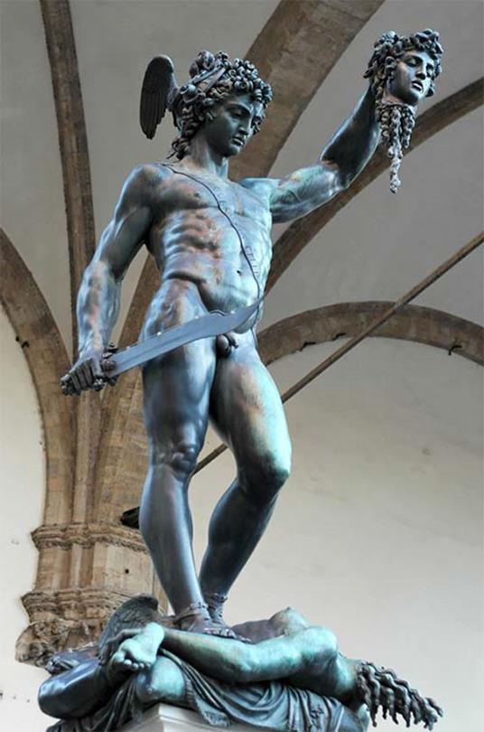

Cuộc sống của họ tưởng cứ thế trôi đi trong sự bình dị, nghèo hèn nhưng ấm cúng cho đến suốt đời. Nhưng rủi thay, một bữa kia chẳng rõ ma đưa lối quỷ dẫn đường như thế nào mà lại xảy ra một biến cố làm chia ly cái gia đình ấm cúng, trong sạch, giản dị đó. Vua của hòn đảo họ ở, hòn đảo Sériphe, tên là Polydectès vốn là em của ông già Dictys. Nhưng hắn là một đứa em tham tàn và bạo ngược, hắn đã cướp hết gia sản của anh và chẳng thèm chú ý gì đến cuộc sống của người anh nghèo khổ đó. Được biết sống chung với người anh hắn có hai mẹ con một gia đình bất hạnh nào trôi dạt đến, người mẹ nhan sắc chưa hề tàn phai, hắn liền tức tốc đến ngay. Và khi đã thấy nhan sắc của nàng Danaé, hắn liền nảy ra một mưu đồ đen tối: “Ta phải tìm cách trừ khử thằng con của cô ta đi thì mới có thể bắt ép cô ta làm vợ được”. Hắn mời hai mẹ con Danaé vào sống trong cung điện và tiếp đãi rất nồng hậu. Hai mẹ con chẳng mảy may nghi ngờ gì về cách cư xử đầy tấm lòng quý người trọng khách của hắn.
Một hôm Polydectès cho mời Persée tới dự một bữa tiệc vô cùng trọng thể gồm đủ mặt văn võ bá quan. Giữa tiệc, Polydectès đứng lên hỏi các quần thần, một câu hỏi xem ra rất bình thường nhưng thật ra chứa đầy thâm ý:
- Này hỡi văn võ bá quan? Ta sắp có chuyện vui mừng. Các người hãy chọn dâng ta một lễ vật gì cho xứng đáng, phải nhớ là một lễ vật gì cho xứng đáng với ta, một vị vua đầy quyền thế đang cai quản hòn đảo Sériphe thần thánh.
Các quần thần nhìn nhau một lát rồi một vị đứng lên trả lời:
- Muôn tâu thánh thượng! Lễ vật xứng đáng theo kẻ hạ thần không thể gì hơn là chọn dâng thánh thượng một con chiến mã cực tốt.
Polydectès nghe xong, trầm ngâm suy nghĩ rồi nói:
- Đúng, một con chiến mã hoặc một đôi chiến mã là một tặng phẩm quý giá. Nhưng ta muốn có một tặng phẩm có lợi cho cuộc sống của dân lành.
Trong đám quân thần nổi lên tiếng xì xào:
- Ác quỷ Gorgone153.
Nhà vua nghe tiếng xì xào ấy, gật gật đầu tỏ vẻ hài lòng. Nhưng trong đám quần thần không một ai dám đứng lên xin dâng vua tặng phẩm ấy. Chính trong lúc ấy Persée đứng lên dõng dạc nói:
- Một con chiến mã cực tốt chỉ là một lễ vật tầm thường. Nếu nhà vua cho phép, kẻ hạ thần này xin đem dâng đầu của ác quỷ Gorgone để đền đáp tấm lòng thương yêu dân lành của nhà vua và để khỏi ô danh Persée này.
Polydectès vui mừng khôn xiết. Y đưa tay lên ngực nghiêng đầu biểu lộ sự tán thưởng cảm ơn. Y nói:
- Persée! Con hãy chứng tỏ con đích thị và xứng đáng là con của thần Zeus. Ta sẽ luôn luôn cầu khấn đấng phụ vương Zeus và các vị thần Olympe phù hộ cho con. Ta tin chắc rằng thần Zeus lúc nào cũng luôn luôn ở bên con, giúp đỡ con vượt qua mọi khó khăn, hiểm nghèo để con lập được những chiến công lẫy lừng, bất diệt.
Đến đây ta phải kể qua về ác quỷ Gorgone để mọi người cùng biết và từ đó mới có thể thấy hết được nỗi nguy hiểm mà Persée sắp phải đương đầu. Gorgone là tên gọi chung cho ba chị em một con ác quỷ mà ai nghe đến tên chúng, chỉ nghe đến tên chúng thôi, cũng đủ rùng mình sởn gáy. Trong số ba chị em lũ quỷ này thì Méduse là con quỷ hung dữ nhất nhưng cũng là con quỷ trẻ nhất và có thể đánh chết được, còn hai con kia thì bất tử. Chúng là con gái của Phorcys, cháu của Pontos và Céto, chắt của Okéanos. Không thể tưởng tượng được hết vẻ quái dị khủng khiếp khi ta nhìn thấy hình thù của lũ quỷ này. Đầu của chúng có một đàn rắn độc quấn quanh như một vành khăn. Những con rắn này lúc nào cũng ngóc đầu lên tua tủa, nhe nanh há miệng, rãi rớt ròng ròng, sẵn sàng cắn mổ vào bất cứ ai đụng đến chủ nó. Miệng ác quỷ thè lè ra hai cái răng nanh nhọn hoắt như răng lợn lòi, như sừng tê giác. Tay chúng bằng đồng, móng sắc hơn dao. Kẻ nào vô phúc sa vào cánh tay ấy thì chỉ nói đến việc gỡ ra cho thoát cũng khó chứ đừng nói gì đến việc vung gươm khoa dao chém lại chúng. Chúng có đôi cánh bằng vàng để có thể bay lượn trên không, tiến thoái, lên xuống nhẹ nhàng khi giao chiến. Song đó cũng chưa phải là điều đáng sợ nhất. Cái làm cho mọi người kinh hãi hơn hết là đôi mắt nảy lửa của chúng. Đôi mắt đỏ ngầu lúc nào cũng ngùn ngụt bốc lửa, hễ nhìn vào ai là lập tức người đó biến thành đá. Vì thế đã từ bao lâu lũ ác quỷ hoành hành mà chẳng ai dám bén mảng đến gần. Và cũng chưa hề có người nào nghĩ, dám nghĩ đến việc diệt trừ chúng để cứu dân lành thoát khỏi một tai họa khủng khiếp.
Persée ra đi nhưng không dám nói cho mẹ biết. Chàng lên một con thuyền sang đất Hy Lạp vì theo chàng chỉ có đến nơi đây thì chàng mới có thể tìm hỏi được đường đi tới hang ổ của lũ ác quỷ Gorgone. Persée trước hết đến đền thờ Delphes để cầu xin một lời chỉ dẫn. Nhưng chàng chỉ được viên nữ tư tế nói cho biết chàng phải đi tới xứ sở của giống người không sống bằng lúa mì mà chỉ sống bằng hạt dẻ. Chàng lại tới Dodone, xứ sở của những cây sồi để nghe chúng truyền đạt lại những lời phán bảo của Zeus. Song cũng chẳng có gì rõ hơn, Persée chỉ còn cách tới xứ sở của những người Selle chỉ biết ăn hạt dẻ. Chàng ra đi ruột gan bời bời những câu hỏi: “Đi đâu? Đi nẻo nào? Đường nào? Làm cách nào để diệt trừ được ác quỷ?” Chàng tin ở sức mạnh và trí tuệ của mình nhưng chàng cũng tin vào sự giúp đỡ của các vị thần Olympe, vì những cây sồi ở Dodone đã cho chàng biết các vị thần luôn che chở và bảo vệ chàng thoát khỏi tai họa. Vì quả thật như vậy, các vị thần Olympe không thể nào để cho người con trai của Zeus bị ác quỷ phanh thây, hút máu, những dòng máu người nóng hổi mà chúng rất thèm khát. Thần Hermès, người truyền lệnh nhanh hơn ý nghĩ và nữ thần Athéna, người nữ chiến binh, con của Zeus, đã kịp thời xuống trần giúp Persée vượt mọi khó khăn. Trước hết Hermès chỉ cho Persée biết chàng phải đi qua những nơi nào để tới được chỗ ở của các quỷ Gorgone. Chàng phải đi qua bao xứ sở xa lạ, vượt qua bao núi non trùng điệp, biển rộng sông dài song không phải đã tới ngay được nơi chàng muốn đến. Muốn tới được sào huyệt của lũ quỷ Gorgone, chàng phải bắt được ba con quỷ Greée154, vốn là chị ruột của lũ Gorgone, khai báo cho biết tỏ tường đường vào hang ổ của lũ em chúng bởi vì lũ quỷ Greée được Gorgone trao cho nhiệm vụ trấn giữ đường vào. Đây là ba con quỷ già ở tận một vùng đất xa xôi mà chưa mấy ai biết đến. Nơi đây tối tăm mù mịt chẳng có ánh sáng mặt trời, mặt trăng. Quanh năm bầu trời lúc nào cũng mờ mờ xam xám như buổi hoàng hôn của mùa đông rét mướt. Người ta gọi là xứ sở của Bóng tối. Có điều kỳ lạ là ba chị em lũ quỷ già Greée chỉ có chung một con mắt và một chiếc răng vì thế chúng phải thay nhau dùng mỗi con một lát. Thân chúng như hệt con thiên nga, tóc thì bạc trắng và nói chung chẳng có gì đáng sợ. Biết được đường đi cũng chưa phải là xong, Persée còn phải bắt lũ quỷ già này khai báo cho biết chàng cần phải có những vũ khí gì, như thế nào, tìm ở đâu, để có thể bước vào cuộc quyết đấu với lũ Gorgone.
Persée đi với những điều chỉ dẫn như vậy. Trải qua nhiều ngày nhiều tháng mải miết đi, chàng đã tới được xứ sở Bóng Tối của lũ quỷ Greée. Chàng quan sát sự canh gác của chúng và suy tính cách hành động. Nấp trong bóng tối, lừa lúc chúng đổi gác tháo mắt ra trao cho nhau, chàng lao tới như một ngọn gió lốc giật phăng chiếc mắt đang còn ở trên tay một con Greée. Cả lũ kêu rống lên sợ hãi. Mù mất rồi, ôi thôi chẳng còn trông thấy gì nữa. Lợi dụng luôn tình thế đó, Persée đoạt luôn cả chiếc răng duy nhất của chúng, lũ quỷ chỉ còn biết kêu khóc van xin Persée trả lại cho chúng hai báu vật đó. Thế là Persée có thể đòi chúng khai báo những điều mình cần biết. Bây giờ lại bắt đầu một cuộc hành trình mới nữa đối với Persée. Chàng phải đi tới nơi ở của những nàng Nymphe phương Bắc để xin các nàng ban cho những thứ vũ khí lợi hại, cần thiết cho cuộc thử thách một mất một còn với lũ quỷ Gorgone: một chiếc mũ tàng hình của thần Hadès để Gorgone có mắt cũng như mù, một đôi dép có cánh để có thể bay lượn trên không như Gorgone, và cuối cùng một chiếc đẫy thần để có thể cho đầu ác quỷ Méduse vào đó đem về. Lại những ngày đi đêm nghỉ, lại vượt qua biết bao chặng đường dài mệt đến kiệt sức đứt hơi. Nhưng cuối cùng Persée đã xin được các nàng Nymphe phương Bắc những vũ khí vô cùng lợi hại đó.
Trước khi bước vào cuộc thử thách đẫm máu này, thần Hermès ban cho chàng thanh gươm dài và cong. Đó là một thanh gươm hiếm có. Chắc chắn rằng không một người trần thế nào lại có thể rèn được một thanh gươm rắn và sắc đến như thế. Chỉ có dùng thanh gươm này thì mới chém được vào làn vẩy cứng trên thân lũ ác quỷ. Nhưng như chúng ta đã biết, đôi mắt nảy lửa của Gorgone nhìn vào ai thì lập tức người đó biến thành đá. Vậy làm thế nào Persée có thể giết được ác quỷ nếu không nhìn vào nó, mặt đối mặt đương đầu với nó? Nữ thần Athéna sẽ giúp chàng vượt qua khó khăn này.
Như vậy công việc đã xong xuôi. Bây giờ chỉ còn việc đi thẳng tới sào huyệt của lũ quỷ Gorgone. Nhờ đôi dép có cánh, Persée có thể bay vút lên không và đi trên mây trên gió như chim bay. Chàng từ trên trời cao nhìn xuống để nhận đường. Những đô thị to đẹp là như thế mà lúc này đây trông chỉ thấy loang loáng ánh sáng lấp lánh của những hàng cột cao bằng đá cẩm thạch. Những vệt xanh to kéo dài và những dải rừng. Sông thì như một tấm lụa trắng trải ra, uốn lượn xen giữa những mầu nâu của đất. Persée, theo lời chỉ dẫn của lũ quỷ Greée, đi về phía biển. Chẳng mấy chốc biển đã hiện ra ở dưới chân chàng, xanh ngắt mênh mông với những vệt trắng nho nhỏ, chuyển động, Persée để ý tìm trên mặt biển bao la một dải đất đen. Chàng bay thấp dần xuống để khỏi bị những đám mây che mặt. Kia rồi, một dải đất đen hiện ra, nổi bồng lên trên mặt biển. Đó là hòn đảo của lũ quỷ Gorgone. Persée xà xuống như một con chim đại bàng rồi chàng lượn vòng đi vòng lại trên hòn đảo để tìm lũ quái vật. Chàng thấy chúng nằm dài trên một tảng đá to, rộng và phẳng. Chúng đang ngủ, cánh tay đồng và những vẩy đồng trên thân chúng sáng nhấp nhánh dưới ánh mặt trời. Đây là thời cơ thuận lợi nhất để Persée có thể lập được chiến công một cách dễ dàng và nhanh chóng. Persée bay vút lên cao. Chàng sợ sà xuống thấp quá lũ quỷ thấy động, tỉnh giấc ngủ thì vô cùng nguy hiểm, mặc dù chàng đã đội chiếc mũ tàng hình của thần Hadès. Nữ thần Athéna lúc này đã hiện ra. Để tránh cho Persée khỏi phải nhìn vào lũ quái vật, nữ thần giơ chiếc khiên đồng sáng loáng của mình ra. Không thể nào diễn tả được chiếc khiên đó sáng và đẹp đến như thế nào, chỉ biết nói vắn tắt, nó sáng như gương. Persée bay trên trời cao, nhìn vào tấm khiên đồng của nữ thần Athéna mà chuẩn định được đối thủ của mình ở dưới đất để giáng một đòn sét đánh. Chàng quyết định sẽ chém đầu ác quỷ Méduse vì hai con kia vốn bất tử. Nhưng Méduse là con nào mới được chứ? Thần Hermès, người chỉ đường không thể chê trách được, đoán biết được nỗi băn khoăn của chàng, vì đối với các vị thần điều đó không có gì là khó, thần bèn cất tiếng nói chỉ bảo cho chàng:
- Hỡi Persée, con của Zeus uy nghiêm! Chàng hãy dũng cảm lên lao thẳng xuống chặt ngay đầu ác quỷ Méduse là con quỷ đang nằm gần biển nhất ấy. Chàng phải chém cho chính xác kẻo nó mà tỉnh dậy thì vô cùng nguy hiểm.
Persée nhìn vào tấm khiên của nữ thần Athéna. Chàng bay một vòng hai vòng rồi ba vòng... Bất thần chàng đâm bổ xuống. Thanh gươm vung lên. Vèo một cái! Đầu ác quỷ Méduse văng ra lăn lông lốc trên mặt đất. Persée bay vọt lên cao. Nhìn vào tấm khiên sáng như gương của nữ thần Athéna, chàng biết được đầu ác quỷ ở chỗ nào. Vì thế chàng chỉ còn việc sà xuống nhặt nó cho vào chiếc đẫy thần mà tránh được phải nhìn đối mặt vào nó. Lại nói về lúc Méduse bị chặt đầu. Chiếc đầu văng ra khỏi thân. Máu từ cổ ác quỷ phun ra ồng ộc. Và kỳ lạ sao, từ cổ nó bay vụt ra một con ngựa có cánh, trên lưng ngựa là một gã khổng lồ tay cầm một thanh bảo kiếm vàng. Đó là gã khổng lồ Chrysaor và con thần mã có cánh Pégase. Cả người lẫn ngựa bay thẳng lên trời không hề bận tâm đến chuyện của Persée và Méduse.
Nhát gươm của Persée giết chết Méduse đã làm hai con quỷ đang ngủ giật mình tỉnh dậy. Bừng mắt ra thì chúng đã thấy xác Méduse nằm đấy, đang giãy đành đạch, máu chảy lênh láng. Chúng gầm lên tức tối và đưa mắt nhìn kẻ thù. Chúng bay lên trời tìm trong các đám mây. Chúng sà xuống đất tìm trong các đường hẻm thung lũng. Nhưng chúng chẳng thấy gì. Nhờ chiếc mũ tàng hình của thần Hadès, Persée đã ra đi ngay trước mặt chúng mà chúng không tài nào nhìn thấy.
Thế là Persée con của thần Zeus vĩ đại, đã lập được một chiến công to lớn mở đầu cho sự nghiệp anh hùng của mình, thực hiện đúng lời cam kết với Polydectès.
